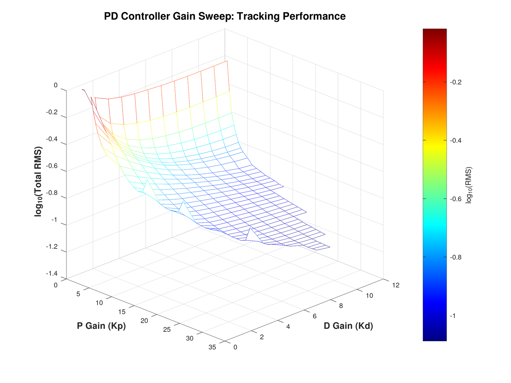
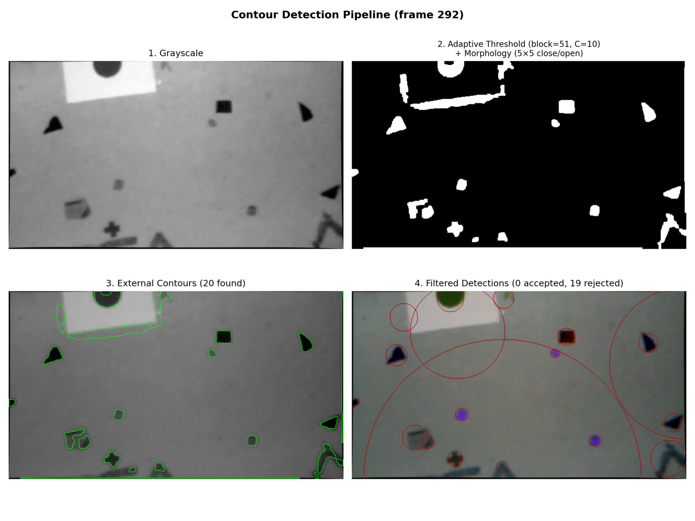
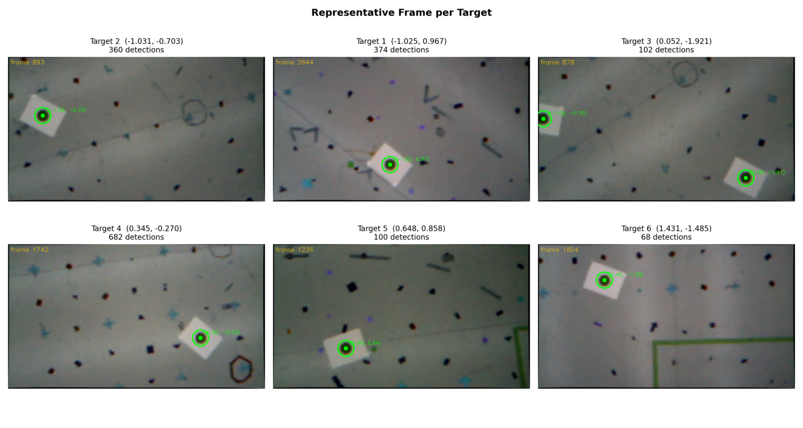
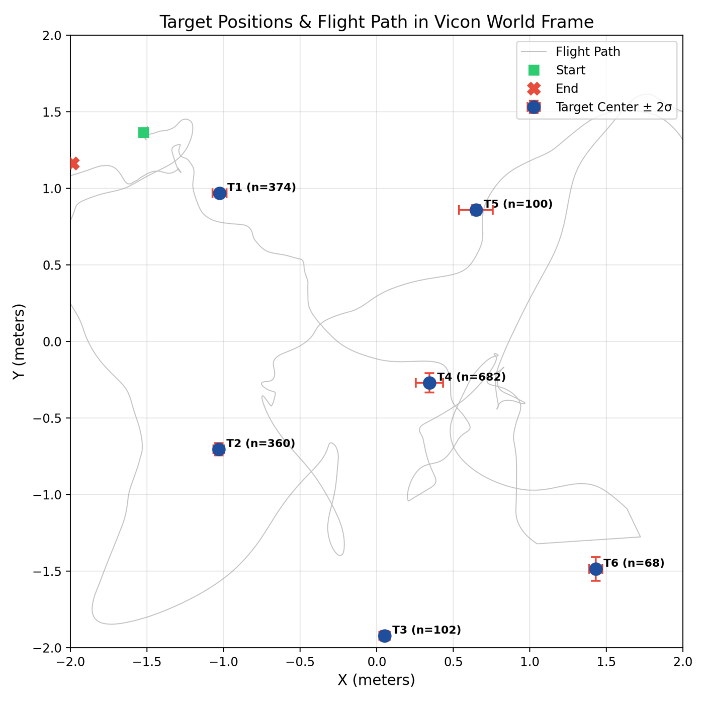
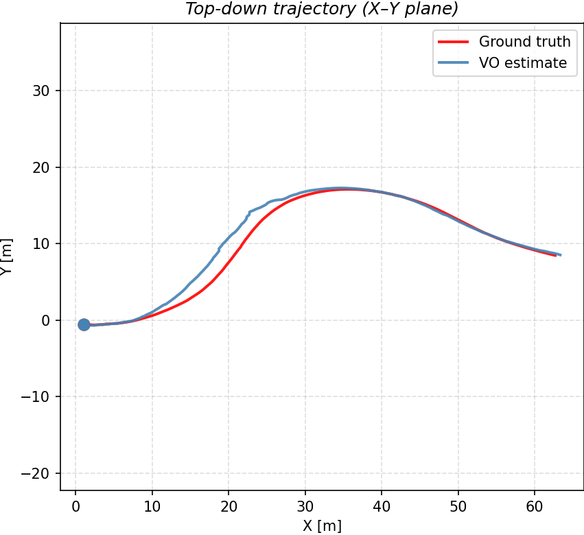
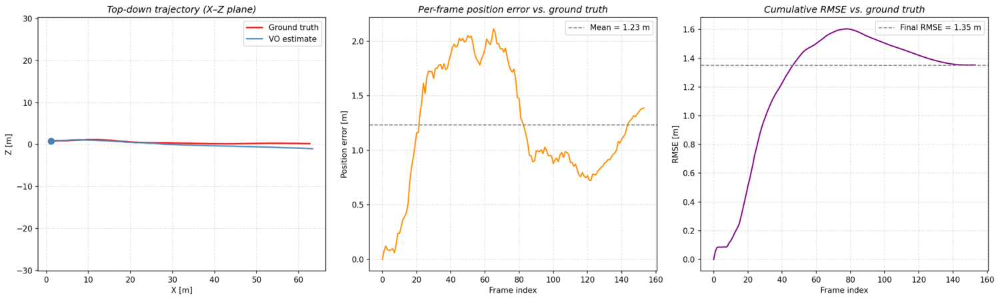

1.Controllers, head-to-head
The point of implementing all three on the same platform is the comparison. Each controller was tuned for the same quadrotor stabilization and trajectory-tracking tasks:
- PID, the baseline: per-axis loops, fast to tune, no model required, and a reference point for what the model-based methods buy you.
- LQR: optimal state feedback on the linearized dynamics; one principled trade-off (Q vs. R) instead of a dozen gains.
- MPC: receding-horizon optimization with constraints, paying compute for the ability to anticipate the trajectory rather than chase it.
Tuning was systematic rather than by feel: the PD baseline's gains came from a full sweep over Kp×Kd, scoring closed-loop tracking RMS in the PyBullet Crazyflie simulation.

2.Target detection & localization
The vision lab: detect ground targets from a quadrotor's downward camera during real flights, then estimate where each target actually is. The detection front end is a classical pipeline (grayscale, adaptive threshold with morphological cleanup, external contours, geometric filtering), which keeps it fast and fully debuggable frame by frame.

Per-frame detections are back-projected through the camera model into the Vicon world frame, clustered per target, and averaged into position estimates with uncertainty. Hundreds of detections per target collapse into centimeter-scale estimates.


3.Visual odometry front end
The estimation half: a stereo visual-odometry pipeline run on the KITTI city dataset, computing relative pose from frame-to-frame feature correspondences. Raw matches are contaminated with outliers, so the pose estimate runs inside RANSAC: hypothesize on minimal sets, score by inlier consensus, refit on the winning inlier set. Over the ~65 m KITTI drive the estimate tracks ground truth with a mean per-frame position error of 1.23 m (cumulative RMSE 1.35 m), dead-reckoned with no loop closure.


4.Where it leads
This coursework is the seed of Rinnegan: the same estimation problem, scaled from one vehicle's relative pose to a multi-agent factor graph.